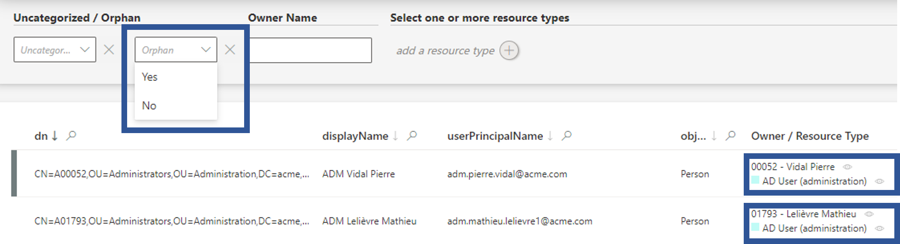
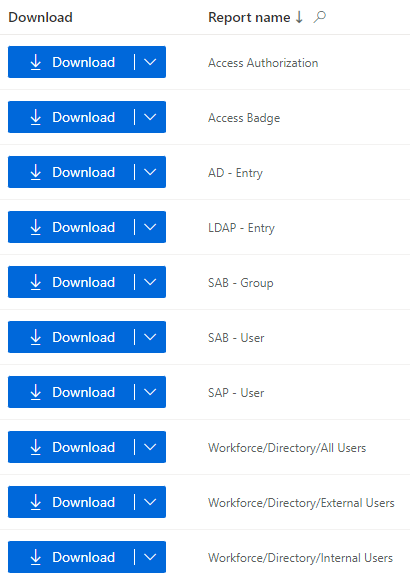
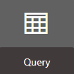
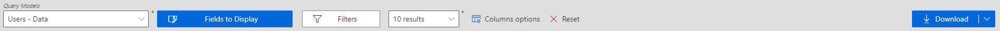
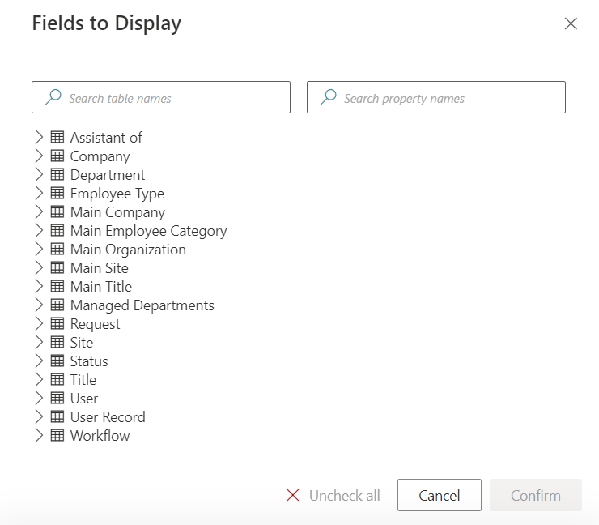
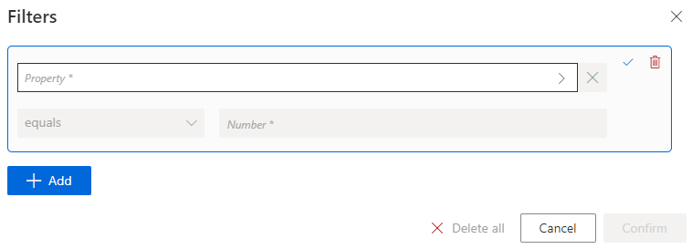

Generate Reports
How to use Identity Manager's reporting modules to produce IGA reports for auditing and governance purposes.
Overview
Reporting features help users produce reports for auditing and performance evaluation. The aim is to be aware of the whole assignment landscape, display it for analysis, and act upon it if needed. Governance also helps produce audit-ready reports. You can start to set up governance features relatively early in your Identity Manager journey and measure your progress from the very start.
A few reporting tools are already available in Identity Manager, used in other parts of your IGA project, for example:
- the list of entitlements for a given user in their View Permissions tab;

- the list of all requests that you are authorized to see in Workflow Overview accessible from the home page in the Administration section;
- the list of Review Orphaned and Unused Accounts.

Identity Manager puts users in control of their reporting. Rich features help produce customizable reports that can be used to check the assignment policy results, or gather information for an audit.
Identity Manager provides several different levels of reporting according to your needs and technical tools. You can:
- download predefined reports for simple needs;
- add new reports to the predefined ones through XML configuration, for recurring needs that aren't met by available reports (this requires XML configuration knowledge);
- create customized reports with the Query module and its universes configured beforehand, to meet specific needs (this requires certain technical knowledge);
- create customized graphic reports with PowerBI, to meet specific needs (this requires certain technical knowledge).
Participants and Artifacts
This operation can be performed by any user interested in producing IGA reports.
| Input | Output |
|---|---|
| Entries (required) |
Reports |
Download Predefined Reports
Identity Manager provides a selection of predefined reports available in the solution. They represent the most common use cases.
The accessibility of these predefined reports was configured during Configure a User Profile .
Download predefined reports by proceeding as follows:
-
Click on Reports on the left of the home page to access the list of predefined reports.

-
Choose the appropriate report and click on Download to get an Excel report. The downward-pointing arrow provides additional report formats.
Add New Reports to the List
When facing frequent reporting requirements outside the scope of predefined reports, new reports can be configured with XML via Report Query and specific query grammar. See the API query grammar topic for additional information.
Create Customized Reports
When facing a one-time need for producing specific reports, Identity Manager's Query module helps display attributes chosen from the data which is already Synchronize Data and Classify Resources . This module offers the possibility to customize reports and download them.
The Query module is based on predefined Universe that can be adjusted later on in XML configuration, just like the list of available query models.
Create a custom report by proceeding as follows:
-
Click on Query in the Administration section on the home page.


-
Choose a query model from among the list.
-
Click on Fields to Display and select the appropriate fields from among the database Universe and click on Confirm.

In cases where Identity Manager doesn't display correctly the information you need, you must try to understand the entity instances and association instances that constitute the Universe that you are working with. Perhaps the fields that you chose cannot be properly correlated.
-
Click on Filters, write the appropriate condition and click on Confirm.

For example, a report could list user names and identifiers but only those with their
Contract end dateless than today's date, so that we will see all the workers who have left the organization and are still stored in Identity Manager. -
Once all report settings are defined, click on Download to get a CSV report.
Create Customized Graphic Reports with Power BI
When facing a periodic need for producing specific reports, especially when a visual presentation is required, Identity Manager offers the possibility to connect to the Power BI application. This application will allow you to create customized reports with a vast range of display options (such as graphs, charts, matrixes, etc.) using Identity Manager's universes.
See the Connect Power BI to Identity Manager topic for additional information on how to analyze Identity Manager's data with Power BI.